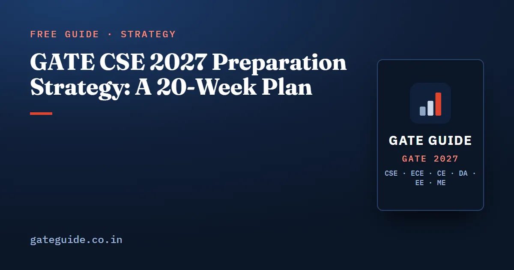

GATE CSE 2027 Preparation Strategy: A 20-Week Plan

A good GATE CSE 2027 preparation strategy starts from one number: about 20 weeks lie between mid-September 2026 and the first exam day, 6 February 2027. Spend them in four phases: concept completion in order of marks (weeks 1–9), topic-wise PYQ practice (weeks 10–13), full mock tests (weeks 14–19) and two weeks of pure revision. The rest of this article explains what goes into each block.
In this guide
Key takeaways
- Study by priority, not by syllabus order. Concepts that appear in almost every paper come first in every subject.
- Weeks 1–9 cover one subject block per week, in order of marks: Mathematics, PDS, Algorithms, OS, COA, CN, TOC and DBMS, then Compiler Design and Digital Logic.
- Solve previous year questions topic-wise against the 2027 syllabus, and skip the Computer Networks topics that were removed.
- Take mocks as full 180-minute sittings, score them with the official marking scheme and analyse every mistake the next day.
- No new topics in the final two weeks.
How much time you actually have
The plan assumes you start around 15 September 2026, have seen the syllabus at least once, and can give 35–40 hours a week. The exam runs on 6–7, 13–14 and 20–21 February 2027, and the CS slot is announced later. If your paper falls on a later date, the extra week or two goes into the final revision phase, not into new topics. Dates can change, so confirm them at gate2027.iitm.ac.in.
The target is fixed too: 3 hours, 65 questions and 100 marks, with General Aptitude worth 15, Engineering Mathematics about 13 and core CS about 72. Only MCQs carry negative marks.
Plan by priority, not by syllabus
Every concept in the syllabus falls into one of four priority levels, based on how often it has been tested and how much it is worth.
| Priority | What it contains | Approximate share of marks | When to study it |
|---|---|---|---|
| A | Concepts tested in almost every paper: eigenvalues, Bayes, C pointer and recursion tracing, Dijkstra and MST, CPU scheduling, paging, cache mapping, pipelining, TCP congestion control, SQL row counts, K-maps, all of General Aptitude | 55–60 % | Weeks 1–9, to full speed |
| B | Frequently asked second-tier forms: TLB and effective access time, Banker's algorithm, DP tables, FIRST/FOLLOW, IPv4 fragmentation, counters | 25–30 % | Weeks 1–9, covered once |
| C | Syllabus items with a thinner record: LU decomposition, disk scheduling, Quine–McCluskey, socket API, B+ tree insertion | Remainder | Mainly weeks 14–19 |
| D | Rare or no longer named: Gray and BCD codes, RISC/CISC, NP-completeness | Small | Only if time permits |
These shares are the book's analytical estimates, not official figures. A topic list is not enough on its own, so the plan also sets a target speed for Priority A work, because the 2024–2026 papers were described by analysts as lengthy and calculation-heavy. A few examples:
- General Aptitude: 13 or more out of 15 in at most 18 minutes.
- Computer Organization: cache tag, index and offset widths in 60 seconds.
- Operating System: a Gantt chart with arrival ties and context-switch overhead in 3 minutes.
- Theory of Computation: classify an unfamiliar language as regular, CFL or neither in 90 seconds.
The most repeated topics in GATE CSE article lists the top 25 concepts, and the subject-wise weightage article shows where the marks have come from since 2009.
The four phases at a glance
| Phase | Weeks and dates | Main work | Checkpoint |
|---|---|---|---|
| 1. Concepts by priority | Weeks 1–9, 15 Sep to 15 Nov | One subject block per week; Priority A to target speed, Priority B covered once; GA 20 minutes daily | Every Priority A concept ticked |
| 2. PYQs and practice | Weeks 10–13, 16 Nov to 13 Dec | Topic-wise PYQs, two subjects per week | Mock 1 and Mock 2 as diagnostics |
| 3. Mock tests | Weeks 14–19, 14 Dec to 24 Jan | One or two full mocks a week plus analysis and re-study | Mocks 3 to 10 |
| 4. Final revision | Weeks 20–21, 25 Jan to 6 Feb | Last-minute sheet, do-not-skip checklist, personal error log | Error log cut to one page |
Phase 1: subject order for weeks 1–9
The order follows marks. Mathematics (13 marks) and the PDS–Algorithms block come first, then the 8–9 mark middle tier, then the low-weight but formula-stable subjects.
- Weeks 1–2, Engineering Mathematics. Probability and linear algebra first, then discrete mathematics and calculus. Start your error log and the daily GA slot in week 1.
- Week 3, Programming and Data Structures. C semantics, pointers and 2-D arrays, recursion, BSTs, heaps and traversals. Trace every program on paper with a variable table.
- Week 4, Algorithms. Asymptotics, recurrences, sorting and hashing counts, greedy and DP, then graph algorithms on 6–8 vertex instances.
- Week 5, Operating System. Scheduling, synchronization, paging and TLB, page replacement and deadlock, then file systems and fork().
- Week 6, Computer Organization. Cache mapping and AMAT, pipeline timing and hazards, then memory interfacing and control-unit design, both newly explicit in 2027.
- Week 7, Computer Networks (2027 list only). Delay arithmetic, sliding-window ARQ, CIDR, fragmentation and TCP. Start Digital Logic Priority A the same week.
- Week 8, Theory of Computation and DBMS. Finish the week able to write the closure and decidability tables from memory.
- Week 9, Compiler Design and Digital Logic Priority B, plus catch-up on any gap.
If you already know a subject, spend the first day of its week on a timed Priority A practice set. If you meet the target speed, give the rest of that week to the same subject's Priority B and C topics. If you are starting from zero, keep Phase 1 to Priorities A and B.
This article gives you the order and the rules. The book turns them into a dated week-by-week roadmap, with Priority A–D tables that set a target competence for every subject at every priority level. See what the book includes.
Phase 2: previous year questions, topic-wise
From week 10, solve PYQs by topic, not paper by paper, and always check each one against the 2027 syllabus.
- Priority A concepts: every PYQ from 2014–2026, plus at least three older ones.
- Priority B concepts: the 2018–2026 PYQs.
- Priority C concepts: fresh practice questions only.
Skip old Computer Networks questions on OSI and TCP/IP layer identification, framing, bridging, ARP, DHCP, ICMP, UDP, SMTP, FTP and email. These topics are not in the 2027 syllabus.
Take Mock 1 at the end of week 11 and Mock 2 at the end of week 13. Their purpose is a subject scorecard, not a score. Use the result to choose the three weakest subtopics to re-study.
Phase 3: mock tests with a purpose
Weeks 14–19 hold the remaining eight mocks, one or two a week. Each one is taken in a single 180-minute sitting at the exam's clock time, scored with the official scheme, and followed the next day by a written analysis of every wrong, skipped and slow question.
Plan the mocks so each has a different job:
- Recent question forms.
- Statement-based MCQs and MSQs.
- A NAT-heavy paper for numerical stamina.
- A balanced full-syllabus paper.
- Trap-heavy questions.
- Overlooked syllabus items.
- Exam-like pacing.
- A final paper built on the highest-confidence concepts.
Between mocks, work on whatever the analysis exposes: trap drills, Priority C topics, a handwritten formula sheet. The mock test strategy article explains the scoring and analysis method step by step. The book provides all ten mocks in this design order, in the official pattern, with answer keys and worked solutions.
Phase 4: the final two weeks
No new material. Three things govern these days:
- The last-minute revision sheet, read once daily.
- A do-not-skip checklist of formulas and rules, each ticked only when you can do it from memory.
- Your personal error log, cut to one page by 31 January.
The only timed work left is one re-attempt of your weakest mock's hardest questions, in the same time slot as your exam. In the last week, align your sleep to your slot and check your admit card, ID and route. The last-month revision plan covers these weeks in detail.
If you are starting late
The phase structure still holds. Shorten Phase 1 by dropping Priority C and D topics, and never cut the mock analysis or the final revision weeks. Read how to prepare for GATE CSE in 2 months for a compressed version built on the same priorities.
What score to plan for
Raw marks map to ranks differently each year, so this section gives no rank figures. The firm reference point is the General-category qualifying mark for CS, published on each organising institute's cut-off page: 27.6 in 2024 (IISc Bengaluru), 29.2 in 2025 (IIT Roorkee) and 30 in 2026 (IIT Guwahati). The 2027 value will be computed afresh from the 2027 paper. Qualifying is the floor, not the target, because admission and recruitment go by rank. As a judgement rather than a published figure, aiming for 50–60 marks means Priority A and B done well, steady mock scores of 55 or more and NAT accuracy above 80 %.
The book gives the full score-band table, from qualifying to the top 50. It also contains the complete 20-week roadmap, the Top 100 concepts and 1,120 questions with worked solutions to fill each phase. Get the full plan here.
Frequently asked questions
Is 20 weeks enough to prepare for GATE CSE 2027?
Twenty weeks is enough for a structured attempt if you have seen the syllabus once and can give about 35 to 40 hours a week. The plan works because it studies by priority, finishing the most frequently tested concepts first, and reserves the last six weeks for mock tests and revision instead of new theory.
How many hours a day should I study for GATE CSE?
The 20-week plan in this article assumes about 35 to 40 hours a week, which is roughly five to six hours a day across seven days. If you have less time, keep the phase structure and cut lower-priority topics rather than skipping the mock tests or the final two weeks of revision.
Which subject should I start GATE CSE preparation with?
Start with Engineering Mathematics, then Programming and Data Structures and Algorithms. The order follows marks. Mathematics carries 13 marks and PDS and Algorithms together are estimated at roughly 18 to 22 marks, so finishing them first secures a large share of the technical marks early.
When should I start taking GATE CSE mock tests?
In this plan the first full mock comes at the end of November, after every subject has been covered once and topic-wise PYQ practice has begun. The first two mocks are diagnostics for a subject scorecard. From mid-December to late January you take one or two mocks a week, each followed by a day of analysis.
When is the GATE CSE 2027 exam?
GATE 2027 is scheduled for 6 to 7, 13 to 14 and 20 to 21 February 2027, with results on 19 March 2027. The slot for the CS paper is announced later. Dates can change, so confirm them on the official site gate2027.iitm.ac.in before you fix your plan.
Sources
- GATE 2027 official website (IIT Madras)
- GATE 2027 question paper pattern
- GATE 2026 cut-off marks (IIT Guwahati, official)
- GATE 2025 cut-off marks (IIT Roorkee, official)
- GATE 2024 cut-off marks (IISc Bengaluru, official)
Dates, fees and the syllabus are set by the GATE 2027 organising institute and can change. Always confirm at gate2027.iitm.ac.in.